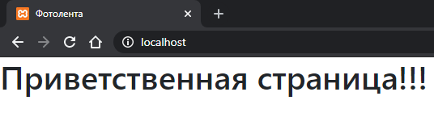

9.1 Старт
Сейчас мы по шагам запустим сервер на Express Node.js, который будет присылать нам стратическую страницу.
- В папке вашего проекта (например Photo) создайте папки client и server.
- Поместите файл index.html в папку client c листингом 1. В index.html нужно сверстать приветственную надпись. Рекомендую использовать Bootstrap.
- В папку server кладем файл index.js с листингом 2. Внимание! В коде index.js путь к файлу index.html нужно прописать полностью от корня диска.
- Запускаем 2 экземпляра Powershell. В одном будем работать с сервером, в другом с клиентом.
- Последовательно выполняем эти команды в Powershell (окно для сервера):
- Set-ExecutionPolicy RemoteSigned -Scope Process - разрешаем исполнять скрипты
- Переходим в папку server с помощью cd.
- Устанавливаем Express: npm install express --save
- Устанавливаем CORS: npm install cors --save
- Устанавливаем JQuery: npm install jquery --save
- Устанавливаем WebSocket: npm install ws --save
- Последовательно выполняем эти команды в Powershell (окно для клиента):
- Set-ExecutionPolicy RemoteSigned -Scope Process - разрешаем исполнять скрипты
- Переходим в папку client с помощью cd.
- Устанавливаем Vue.js: npm install vue --save
- Устанавливаем модули необходимые для сборки компонентов: npm install vueify vue-hot-reload-api babel-core babel-preset-es2015 babel-runtime babel-plugin-transform-runtime --save-dev
- Устанавливаем маршрутизатор Vue: npm install vue-router --save
- Устанавливаем библиотеку vue-jwt-mongo: npm install vue-jwt-mongo --save
- Устанавливаем vue-resource для отправки http-запросов: npm install vue-resource --save
- Устанавливаем модуль Multer (для загрузки файлов): npm install --save multer
- В окне клиента запускаем browserify main.js --outfile bundle.js --transform vueify
- В окне сервера запускаем node index.js
- В браузере заходим по адресу http://localhost/ и видим вот такую страницу.

Листинг 1 index.html
<!DOCTYPE html>
<html lang="ru">
<head>
<meta charset="utf-8">
<title>Фотолента</title>
<link rel="stylesheet" href="https://maxcdn.bootstrapcdn.com/bootstrap/4.0.0/css/bootstrap.min.css">
</head>
<body>
<div id="root"><h1>Приветственная страница!!!</h1></div>
</body>
</html>
Листинг 2 index.js
var express = require("express");
var app = express();
app.use(function (request, response) {
response.sendFile("C:/Users/Алексей/Documents/GitHub/1c-front-end/module-2/lesson9/Photo/client/index.html");
});
app.listen(80);